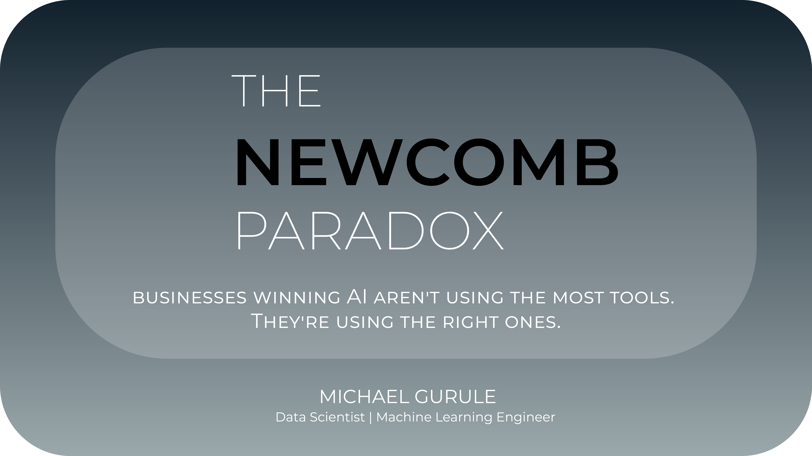
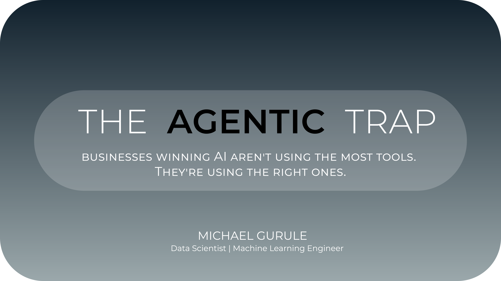
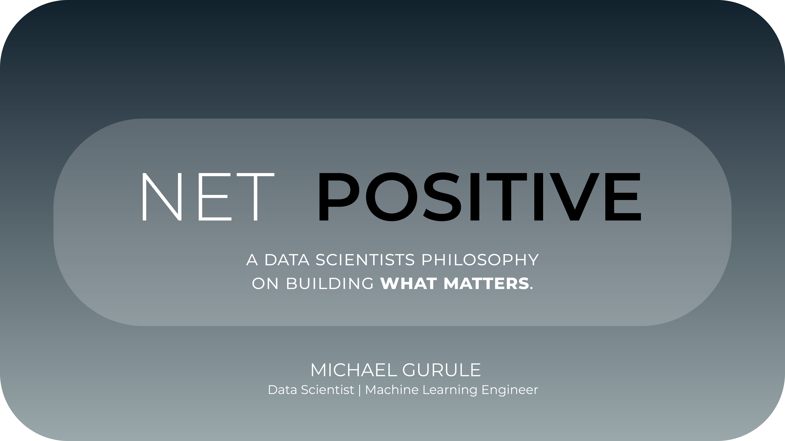

- Probabilistic Graphical Models
- Bayesian Inference at Scale
- Causal Discovery & Reasoning
- Advanced Optimization
Engineering high-integrity Machine Learning systems and Bayesian frameworks for the world’s most complex data environments.
We generate more data than we have ever known what to do with. But volume is not insight. Translating what data actually means for a business requires something that no model supplies on its own: an understanding of what drives that business, an eye for what matters versus what merely appears to matter, and the discipline to cut through the noise before drawing any conclusions.
I think about business challenges in terms of value-added. Not activity, not complexity, and definitely not sophistication for its own sake. Value-added. The best solution to a problem is often quieter than expected, and finding it requires more patience than cleverness.
That is the work I find worth doing.
PyTorch, TensorFlow, XGBoost, Scikit-Learn, PyMC, JAX, FastAPI, Streamlite
AWS, PostgreSQL, Spark, Docker, Kubernetes, Airflow, Databricks, Snowflake, Git/Github
Frontier APIs, Open-Weight Models, Model Context Protocol, Vector Orchestration, Knowledge Graphs
"It's not that I'm so smart, it's just that I stay with problems longer."
— Albert Einstein
A selection of my recent work in Machine Learning and Data Science
HYPERION is a sophisticated machine learning platform designed to simulate and optimize autonomous drone swarms for the detection, tracking, and interception of hypersonic threats in aerospace and defense (A&D) scenarios.
A Bayesian Marketing Mix Model built with PyMC. This model breaks revenue into the components that drive it — baseline, trend, seasonality, media spend across 5 channels, and external controls — then uses the fitted response curves to optimize budget allocation.
MERIDIAN is a comprehensive investment portfolio optimization system combining multi-source market data acquisition, regime-conditional optimization, realistic transaction cost modeling, and an interactive decision support dashboard.
Thoughts on machine learning, data science, and technology

The paradox will not tell you whether to take one box or two. But it will ask you, with remarkable precision, whether you understand the system you are operating in well enough to make that call.
Read on Medium
We can’t escape it. The current buzz word that is being thrown around in every strategy meeting and quarterly earnings call — “Agentic”.
Read on Medium
The best technical talent doesn’t just build impressive systems. They build systems that create lasting value while respecting organizational constraints and operator needs.
Read on MediumInterested in collaboration or have a project in mind? Let's talk.